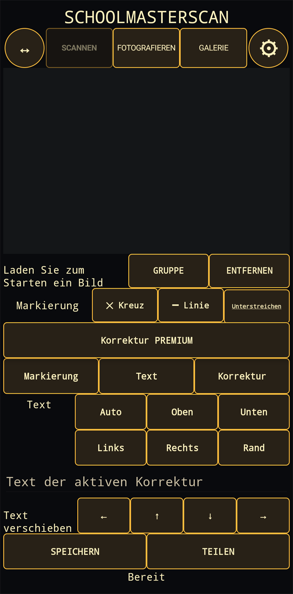

1. Bild erfassen
Scannen ist der Standardmodus: SchoolMasterScan öffnet den in Android/Google Play services integrierten Dokumentenscanner und übergibt das erfasste Dokument an den Editor. Alternativ können Sie Fotografieren oder ein vorhandenes Bild aus der Galerie wählen. Die Schaltfläche ↔ passt das Bild an den Arbeitsbereich an; das Zahnrad öffnet die Einstellungen.
2. Text auswählen und markieren
Tippen Sie nach der Texterkennung auf ein Wort im Bild. Gruppe erweitert die Auswahl, Entfernen löscht eine Auswahl. Danach können Sie Kreuz, Linie oder Unterstreichung anwenden. Farben und Standardmarkierung lassen sich in den Einstellungen festlegen.
3. Korrektur einfügen
Geben Sie den Text in das Feld der aktiven Korrektur ein und wählen Sie die Position: automatisch, oben, unten, links, rechts oder am Rand. Mit den Pfeiltasten können Sie die Position fein anpassen.
Premium-Korrektur
Die Weißabdeckung ist eine optionale Premium-Funktion, die separat erworben werden kann. Damit lässt sich ein Teil des Bildes abdecken und bei Bedarf neuer Text in den korrigierten Bereich setzen.
4. Speichern oder teilen
Speichern legt das fertige JPEG-Bild in der Gerätegalerie ab. Teilen öffnet das Android-Freigabemenü, um es an eine andere App zu senden. Prüfen Sie vor Abschluss stets Texterkennung und Korrekturen.